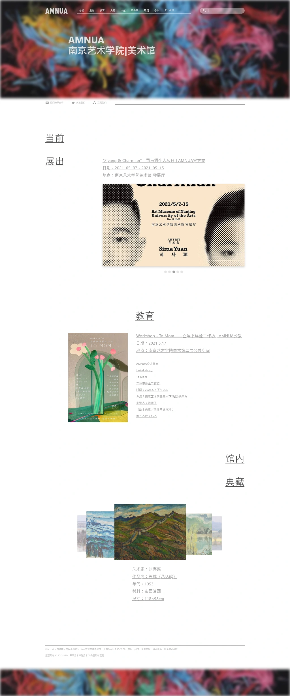
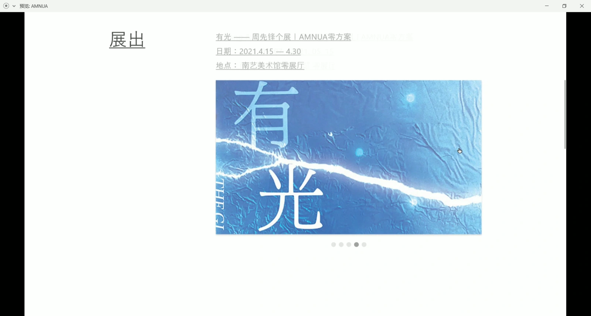
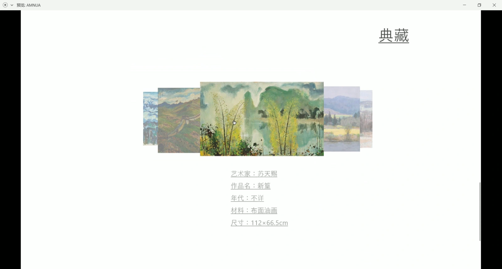
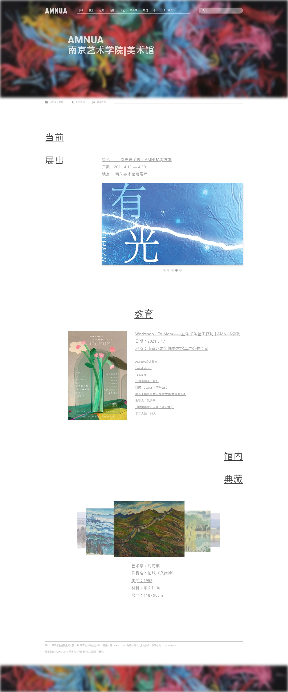
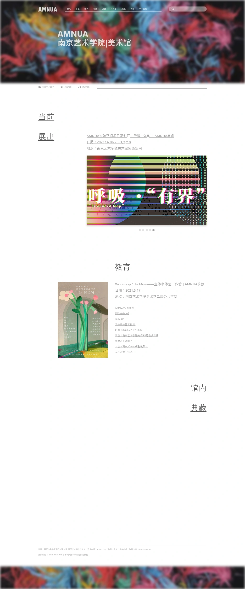

Website redesign concept
NUA Museum
A museum homepage built around exhibitions and artwork.


Three sections to browse
The artwork introduces the museum. Three content areas then provide distinct routes through the page.
- Current exhibitions
Exhibition imagery and concise supporting information.
- Education
A separate area for museum learning activities.
- Collection
Overlapping artwork images invite further browsing.
An Adobe XD redesign concept for the Nanjing University of the Arts Museum. Large images lead into exhibitions, education and the collection.
Layout and image scale
The layout changes its alignment and image scale as the reader moves down the page. Exhibitions, education and the collection share a typographic language without becoming identical cards.




Image changes and hover responses
The recording shows image changes, hover responses and vertical scrolling within the same homepage.
Alternate homepage states
The original exports preserve alternate artwork states within the same layout. Comparing them shows what changes with interaction and what remains consistent.




Before implementation
The image interactions need keyboard and touch equivalents. A working version would also need visible links and reduced-motion options, so navigation does not depend on hover or animation.
Independent homepage redesign concept, not a museum commission or live website. Screens and the interaction recording come from the original Adobe XD project.